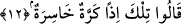
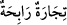

Derler ki: Nahira ayrı nâhira ayrıdır. Nahira çürümüş demek iken, nâhira ise içi
boşalmış, boş hale gelmiş, rüzgar estiği zaman ses çıkaran kemik demektir. Bu takdirde
“nahira” kelimesi çürümek anlamına olan “nahr” kökünden değil, ” /uyuyan kişi ve deli horladı” tâbirinden türemiş olur.
/uyuyan kişi ve deli horladı” tâbirinden türemiş olur.
Rağıb Isfahânî’nin ifâdesine göre “nahir” burundan çıkan ses demektir. Bundan
dolayı sesin çıktığı burun yarığına bu kökten türeme olarak “menharan” denilir.
Menharan, burnun iki deliğinin adıdır.
12. “O zaman bu ziyanlı bir dönüş olur” dediler.
“O zaman bu” dönüş ve hayata döndürülüş “ziyanlı bir dönüş olur dediler.” Bu
âyet-i kerimede “dediler” fiilinin fiil-i mâzî (di-li geçmiş zaman) kipi olarak
getirilmesi, bu inkârın onlardan meydana gelişinin, “fiil-i muzâri” ile ifâde edilen
önceki inkârları gibi, sürekli olmadığına işâret etmek içindir. Yani onlar öldükten sonra
dirilip mahşere gelme ile alay ederek “bu dönüş ve hayata döndürülüş o zaman ziyanlı
bir dönüş olur” dediler. Bu ifâde, onların inançlarında öldükten sonra dirilmenin
meydana geleceğini son derece uzak gördüklerine işâret etmektedir.
Âyet metnindeki “kerre” bir kere dönüş demektir, çoğulu “kerrât” şeklindedir.
Âyetteki “hâsira” kelimesine “ziyanlı, zararlı” şeklinde bir anlam verilebilir. Bir
başka ifâdeyle; buradaki ism-i fâil ile “zararlı, ziyanlı” mânâsında bir nisbet
kasdedilmektedir. Bu ifâdeyi isnâd-ı mecâzî kabilinden olmak üzere “/dönüşün kendisi değil de dönüşü yaşayanlar ziyanlı ve zararlı olacaklardır” şeklinde
anlamak da mümkündür. Bir başka ifâdeyle; burada fiil, meydana gelmede kendine
yakın olan kelimeye isnâd olunmuştur denilebilir. Bu deyim, tıpkı “/
ticâratun
râbiha: kârlı ticaret” tâbirinin aynısıdır. Bu örnekte yer alan “kâr” kavramı aslında
ticaretin değil, ticâret yapanların fiilidir. Ticaret bir alış-veriş, değiş-tokuş
sözleşmesidir. Şu halde “kâr-ticaret”, kavram itibariyle birbirlerine yakın kavramlardır.
Bundan dolayı “kârlı ticaret” denmiştir. Şu halde ziyanlı ve zararlı çıkacak olan dönüş
değil, bu dönüşü yaşayacak kâfirlerdir. Çünkü asıl zararlı olacak olanlar onlardır.
Dönüş ise içerisinde zararın ve ziyanın yaşanacağı bir olgudur. Şimdi buna göre âyete
yeniden mânâ verelim: “Kâfirler derler ki: Eğer bu bahsedilen hayata geri dönüş doğru
çıkacak olursa o halde biz bunu yalanladığımız için zararlı çıkacağız.” Bu mânâyı âyetin
içindeki “izen” kelimesi ifâde etmektedir. Çünkü “izen” âlimlerin cumhuruna göre
cevap ve karşılık harfidir. Kâfirlerin “eğer bu dönüş doğru ise o zaman biz zararlı
çıkacağız” sözlerinin alay şeklinde yorumlanması şundan dolayıdır: Kâfirler
olmayacağına kesin inandıkları ve kesin olarak imkânsız gördükleri bir olguyu şüpheli,
sanki olması muhtemelmiş gibi söylemektedirler. İşte alay ettikleri burdan